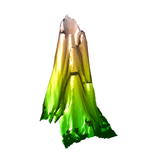
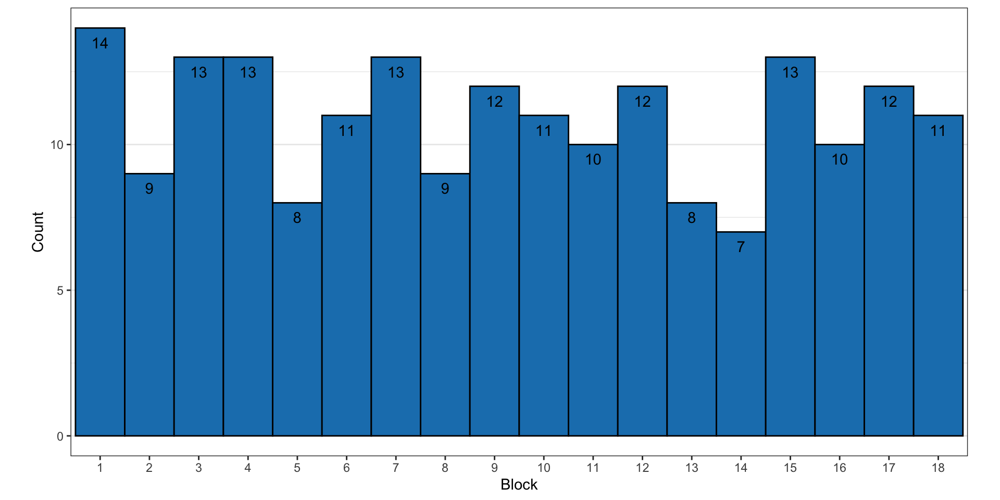
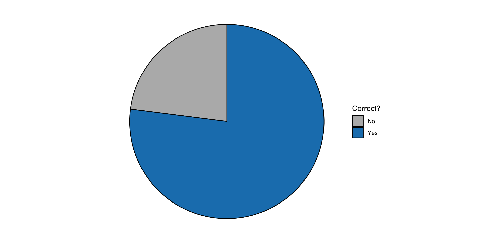

Heat3d
A study on the physical dimensionality of heat maps
Tyler Wiederich
October 16, 2025
Introduction
Heat Maps
Heat maps are a popular way to express data with three dimensions. Two variables are designated as predictors for a single responses.
3D Heat Maps


Background
Studies on direct comparisons of dimensionality are limited when the third dimension coveys information.
Accuracy is worse for volumes than for areas (Croxton and Stein 1932).
- Also theorized by Cleveland and McGill (1984)
- 3D charts can sometimes better encode information than 2D charts (Barfield and Robless 1989).
- 3D heat maps have lower error rates than 2D heat maps in virtual reality (Kraus et al. 2020).
Arguably, these results may not apply to statistical graphics presented within the physical world.
Study Overview
Does numerical accuracy of ratio estimations differ between dimensionality and projections of chart types? It is important to note that direct translations of 2D and 3D heat maps require different visual cues.


Methods
Design of Experiment
Treatment Design
- Media (2D digital, 3D digital, 3D printed)
- Stimuli pair (9)
- Data set (2)
Experimental Design
- Balanced incomplete block on stimuli pair (pick 4 from 9)
- Each participant receives randomized order of \(\text{Media}\times \text{Set}\) (whole-plot)
- Stimuli pairs randomized within \(\text{Media}\times \text{Set}\) (split-plot)
Media Types

Stimuli Construction
The design of the 3D heat map experiment uses the method of constant stimuli: ratios are estimated with respect to one stimuli height that remains the same.
\[ S=\text{Stimuli} \]
Setting 50 as the constant and 90 as the maximum, a sequence of stimuli are chosen by equally partitioning the ratios between \(50/50=1\) and \(50/90\approx0.556\). The same ratios are used when setting 50 as the maximum in the stimuli pair.
Generating Heat Map Data
The general shape of the heat map is a mixture distribution between mathematical formula and uniform random noise.
\[ Z=0.3\cdot U(0,100) + 0.7\cdot f(X,Y) \]
where \(f(X,Y)\) is any given function, scaled between 0 and 100
- Top half of a sphere centered at 5.5
- Lower half of a sphere centered at 5.5
Stimuli Placement
- Data is simulated from previous function to generate grid \((X=1\dots 10, Y=1\dots 10)\)
- Non-50 value is placed onto grid coordinate that minimizes \(|Z-S|\)
- 50 is placed similarly, but only on coordinates that have a Manhattan distance of 3 or 4
\[ |X_1-X_2|+|Y_1-Y_2| = 3 \text{ or } 4 \]
- Repeat process 20 times for a list of heat maps
- Use Chi-squared tests to find heat maps where stimuli are somewhat equally spaced
Heat map selection
With 9 pairs of values, it is expected to see 1.8 stimuli values in each row/column of the heat map.
| Grid Position | 1 | 2 | 3 | 4 | 5 | 6 | 7 | 8 | 9 | 10 |
| Expected | 1.8 | 1.8 | 1.8 | 1.8 | 1.8 | 1.8 | 1.8 | 1.8 | 1.8 | 1.8 |
| Observed | \(n_1\) | \(n_2\) | \(n_3\) | \(n_4\) | \(n_5\) | \(n_6\) | \(n_7\) | \(n_8\) | \(n_9\) | \(n_{10}\) |
\[ \chi^2=\sum\frac{(\text{Observed}-\text{Expected})^2}{\text{Expected}} \]
We use the grid with the smallest average \(\chi^2\) for the \(X\) and \(Y\) axes.
Study Design
For a full replicate, there are \(3\times2\times9=54\) treatment combinations:
- 3 media types (2dd, 3dd, 3dp)
- 2 datasets
- 9 pairs of stimuli
Way too many trials for a single participant’s attention span!
Incomplete Block
Our main interest is the difference between media types, measured at a given ratio and dataset. To accomplish this and to reduce the number of trials per participant, we use 4 of the 9 possible stimuli pairs to create blocks.
\[ 2\times3\times4=24 \]
Figure 4: Balanced Incomplete Block Design. Each stimuli pair in a block is fully crossed with media type and dataset.
Experiment
- Ask participants which value in a stimuli pair is larger
- Ask participants to estimate the value of the smaller stimuli
Figure 5: Screenshot of Shiny app.
Results
Demographics
After data cleaning, a total of 196 Stat 218 students participated in the experiment as of October 13th, 2025.
- Participants who met inclusion criteria (19+ and consented)
- Completed the entire experiment
- In cases of two completions with same user identifier, only the first completion is considered

Figure 6: Gender of experiment participants.
Figure 7: Age categories of experiment participants.
Figure 8: Education level of experiment participants.
Figure 9: Reason for experiment participants.
Block selection
Daily participation
Figure 10: Participation over time.
Which value represents a larger quantity?
4,856 entries were submitted as of October 10th. Almost a quarter of responses were wrong! (22.96%)
Figure 11: Percentage of correct responses to Question 1.
Figure 12: Percentage of correct answers by heat map dataset.
Figure 13: Percentage of correct answers by media type.
Figure 14: Percentage of correct answers by stimuli pair identifier.
Figure 15: Percentage of correct answers by all treatment levels.
Model for Question 1
\[ \text{logit}(\pi_{ijklm})=\mu+P_i+S_j+M_k+(PS)_{ij}+(PM)_{ik}+(SM)_{jk} + (PSM)_{ijk}+\gamma_l+\omega_{lm} + \nu_{jklm} \]
where
- \(\eta\) is the overall intercept on the model scale
- \(P_i, S_j, M_k\) are the effects of stimuli Pair \(i\), dataSet \(j\), and chart Media \(k\)
- \(\gamma_l\sim N(0,\sigma^2_1)\) is the random effect of block \(l\)
- \(\omega_{lm}\sim N(0,\sigma^2_2)\) is the random effect of subject \(m\) in block \(l\)
- \(\nu_{jklm}\sim N(0,\sigma^2_3)\) is the random effect of the Set \(j\) and Media \(k\) ordering for subject \(m\) in block \(l\)
- \(\gamma_l,\omega_{lm},\nu_{jklm}\) are independent
Note: estimation of \(\pi_{ijklm}\) is resource extensive. For now, the following results exclude \(\nu_{jklm}\), thus assuming that charts were presented in a fully randomized order.
Results
Excluding practice trials, there were 4,072 submissions. There was strong evidence of interaction between dataset, media type, and stimuli pair (p-value < 0.0001).
Figure 16: LS Means of probabilities for correct answers to question 1.
Ratio Estimation
Phrasing: “If the larger value you selected above represents 100 units, how many units is the smaller value?”
Out of 4,072 responses, the 2,938 correct responses are used for ratio estimations.
- Remove practice trials
- Remove incorrect responses to Question 1
- Remove stimuli pair where values were the same
Responses
- Directional error: \(\text{Estimated Percentage}-\text{True Percentage}\)
- Magnitude of error: \(|\text{Estimated Percentage}-\text{True Percentage}|\)
- Error rate: \(\frac{|\text{Estimated Percentage}-\text{True Percentage}|}{\text{True Percentage}}\)
Full Model for Question 2
\[ Y_{ijklm}=\mu+P_i+S_j+M_k+(PS)_{ij}+(PM)_{ik}+(SM)_{jk} + (PSM)_{ijk}+\gamma_l+\omega_{lm} + \nu_{jklm} + \epsilon_{ijklm} \]
where
- \(\mu\) is the overall intercept
- \(P_i, S_j, M_k\) are the effects of stimuli Pair \(i\), dataSet \(j\), and chart Media \(k\)
- \(\gamma_l\sim N(0,\sigma^2_1)\) is the random effect of block \(l\)
- \(\omega_{lm}\sim N(0,\sigma^2_2)\) is the random effect of subject \(m\) in block \(l\)
- \(\nu_{jklm}\sim N(0,\sigma^2_3)\) is the random effect of the Set \(j\) and Media \(k\) ordering for subject \(m\) in block \(l\)
- \(\epsilon_{ijklm}\sim N(0,\sigma^2_4)\) is the residual error
- \(\gamma_l,\omega_{lm},\nu_{jklm}, \epsilon_{ijklm}\) are independent
Note: estimation of \(Y_{ijklm}\) is resource extensive. For now, the following results exclude \(\nu_{jklm}\), thus assuming that charts were presented in a fully randomized order.
Directional Error
\[ Y=\text{Estimated ratio}-\text{True ratio} \]
| Effect | Num DF | Den DF | F Value | Pr > F |
|---|---|---|---|---|
| set | 1 | 2725 | 1.74 | 0.1869 |
| media | 2 | 2725 | 2.77 | 0.0628 |
| pair_id | 7 | 2725 | 27.70 | <.0001 |
| set*pair_id | 7 | 2725 | 2.48 | 0.0156 |
Figure 18: LS Means for dataset and stimuli pairs
Figure 19: P-values of differences of directional error for stimuli pairs.
Magnitude of Error
\[ Y=|\text{Estimated ratio}-\text{True ratio}| \]
Change to model:
- \(y_{ijklm}|\gamma_l,\omega_{lm}\sim \text{Gamma}(\mu_{ijklm},\phi)\)
- \(\eta_{ijklm}=\log(\mu_{ijklm})\)
| Effect | Num DF | Den DF | F Value | Pr > F |
|---|---|---|---|---|
| set | 1 | 2732 | 1.62 | 0.2028 |
| media | 2 | 2732 | 18.54 | <.0001 |
| pair_id | 7 | 2732 | 1.55 | 0.1443 |
Error Rate
\[ Y=\frac{|\text{Estimated Percentage}-\text{True Percentage}|}{\text{True Percentage}} \]
Change to model:
- \(y_{ijklm}|\gamma_l,\omega_{lm}\sim \text{Gamma}(\mu_{ijklm},\phi)\)
- \(\eta_{ijklm}=\log(\mu_{ijklm})\)
| Effect | Num DF | Den DF | F Value | Pr > F |
|---|---|---|---|---|
| set | 1 | 2732 | 1.62 | 0.2026 |
| media | 2 | 2732 | 18.55 | <.0001 |
| pair_id | 7 | 2732 | 19.93 | <.0001 |
Figure 22: P-values of differences of directional error for stimuli pairs.
Amount of Time
Figure 23: Distribution of time spent per question, between 0 and 60 seconds.
Conclusion
Key takeaways
Metrics of error are larger for 2D heat maps than for 3D heat maps
- Similar to other studies on informative 3D elements
No statistically significant differences between digital and physical 3D heat charts
Differences between stimuli pairs with same ratio was not statistically significant
Future work?
- Determine if some responses could be “flipped” (100 - estimate). See Figure 28 as an example.
- Use a wider range of ratios (between 0 and 1)
- Include more traditional 3D heat maps
Thank you!
References
“3D Population Density of the US - HomeArea.com.” n.d. https://www.homearea.com/featured/3d-population-density/#3128000. Accessed September 17, 2025.
Barfield, Woodrow, and Robert Robless. 1989. “The Effects of Two- or Three-Dimensional Graphics on the Problem-Solving Performance of Experienced and Novice Decision Makers.” Behaviour & Information Technology 8 (5): 369–85. https://doi.org/10.1080/01449298908914567.
Cleveland, William S., and Robert McGill. 1984. “Graphical Perception: Theory, Experimentation, and Application to the Development of Graphical Methods.” Journal of the American Statistical Association 79 (387): 531–54. https://doi.org/10.1080/01621459.1984.10478080.
Croxton, Frederick E., and Harold Stein. 1932. “Graphic Comparisons by Bars, Squares, Circles, and Cubes.” Journal of the American Statistical Association 27 (177): 54–60. https://doi.org/10.1080/01621459.1932.10503227.
for Educational Statistics, National Center, National Center for Education Statistics, United States. Office of Educational Research, Improvement. Center for Education Statistics, and Institute of Education Sciences (U.S.). 1977. The Condition of Education. 1975-1979: DHEW Publication. U.S. Department of Education, Office of Educational Research and Improvement, National Center for Education Statistics.
Kraus, Matthias, Katrin Angerbauer, Juri Buchmüller, Daniel Schweitzer, Daniel A. Keim, Michael Sedlmair, and Johannes Fuchs. 2020. “CHI ’20: CHI Conference on Human Factors in Computing Systems.” In, 1–14. Honolulu HI USA: ACM. https://doi.org/10.1145/3313831.3376675.
R Core Team. 2024. R: A Language and Environment for Statistical Computing. Vienna, Austria: R Foundation for Statistical Computing. https://www.R-project.org/.
Appendix

Figure 24: Distrubtion of absolute error by stimuli pair.
Figure 25: Effect of slider starting position on abs(Error)
Figure 26: Effect of time on abs(Error)
Figure 27: Number of clicks on 3D digital plots.
Figure 28: Distribution of correct and incorrect responses for pair_id = 5 (stimuli values are the same).